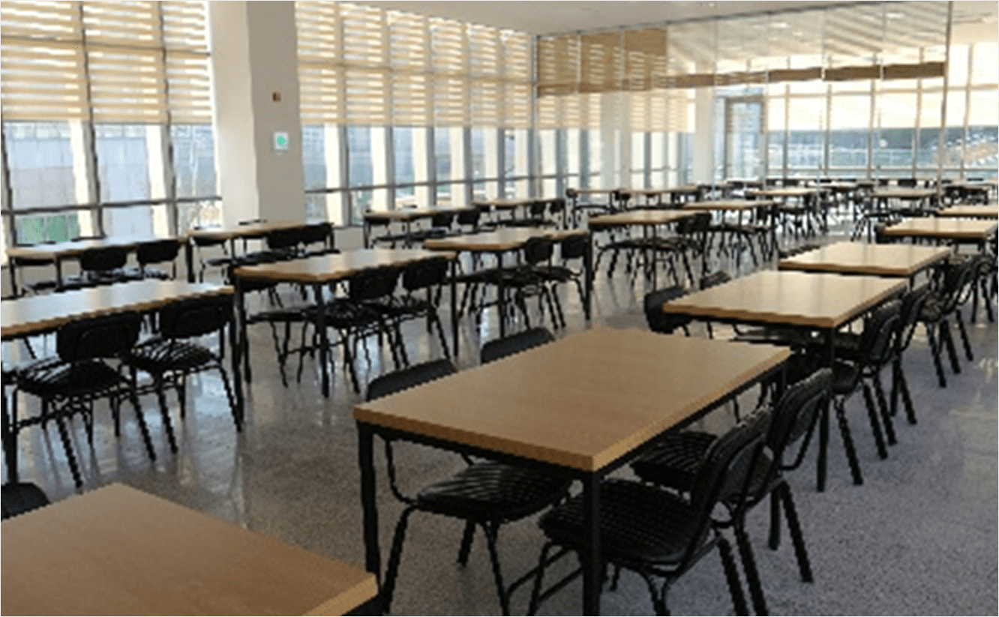

싱싱밥상 운영
싱싱밥상은 소비자 중심의 공간으로 생산자와 소비자의 신뢰와 배려를 통해
함께하는 세종형 로컬푸드 운동의 기본에 충실한 공간입니다.
단순히 음식을 만들기 보다는 로컬푸드에 공감하는 시민들이 만나는 공간으로
1층 요리교실과 연계하는 공유부엌이나, 관심사가 비슷한 사람들끼리 만나
음식을 통해 소통하는 공간입니다. 단순한 상거래를 벗어나 시민이면 누구나
이용할 수 있으며, 요리에 다양한 재능을 가진 분들은 누구나 참여하실 수 있는
“문화 향연의 장”입니다.
우리시에서는 싱싱문화관이 로컬푸드 운동의 일환으로 자리매김하여
판매 촉진은 물론 건강한 먹거리 문화의 식을 제고하고 도시와 농촌의 공동체
형성은 물론 고부가가치 창출로 시민들의 소득향상에 기여하고, 세종시 대표
향토 음식도 형성해 복합생활문화 공간으로 성공적으로 자리매김 할 것입니다.
-  교육장 전경
- 공유부엌 전경